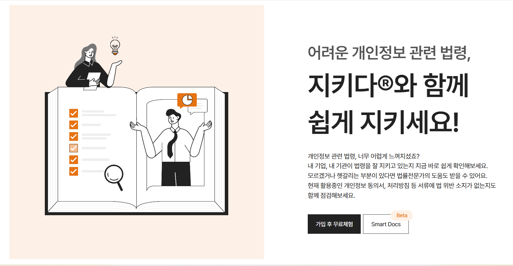

ABOUT ME
김채림
서울 광진구
cofla370@naver.com
경민대학교(IT경영학부)
GitHub
React·Laravel 기반 B2B SaaS를 개발·운영하고 있습니다.
고객 요구사항 분석부터 프론트엔드·백엔드 개발, QA, 배포와 운영까지 경험했습니다.
기능 구현을 넘어 서비스에 필요한 결과를 만드는 개발자를 지향합니다.
김채림
서울 광진구
cofla370@naver.com
경민대학교(IT경영학부)
GitHub

FrontendReact, Vue.js, JavaScript, HTML, CSS/SCSS, jQuery
BackendPHP, Laravel, Node.js, Express.js, Java/JSP
DatabaseMariaDB, MySQL
WorkGit, REST API, QA, 배포, 서비스 운영, 고객 요구사항 분석
 HTML
HTML
 CSS
CSS
 Node.js
Node.js
 React
React
 Vue.js
Vue.js
 jQuery
jQuery
 PHP
PHP
 Java
Java
 MySQL
MySQL
 MariaDB
MariaDB

(주)지키다 재직 중 개발·유지보수하는 컴플라이언스 B2B 서비스입니다.
- 기간 : 2024.07 ~ 현재
- 담당역할 : 웹 풀스택 개발, 유지보수 및 운영
- 반응형 : PC에서만 동작하던 화면을 디자인 리뉴얼 시안에 맞춰 데스크톱·태블릿·모바일에서 사용할 수 있게 다시 퍼블리싱했습니다.
- AI 증적 검토 : 점검 답변과 증적 자료의 일치 여부를 판별하고, 화면을 이동해도 검토가 이어지도록 백그라운드 task를 구현했습니다.
- AI 위수탁계약서 : 첨부 문서를 단계별로 위반·권고 판단하도록 프롬프트와 API를 개발했습니다.
- 사용기술 : PHP, Laravel, React, Vue, JavaScript, HTML, SCSS

(주)잇핀 재직 중 하이퍼스탁론 웹·모바일 서비스를 구축하고, 운영과 배포를 맡은 프로젝트입니다.
- 프로젝트 기간 : 2024.02.06 ~ 2024.04.05
- 담당역할 : 프로젝트 리더(PL), 웹 풀스택 개발, 운영 및 배포
- 담당 화면 : 메인(홈), 상담신청, 한도조회, 이벤트, 하이퍼쇼츠 영상
- 사용기술 : HTML, CSS, JavaScript, Node.js, MySQL, MariaDB, 스파이더젠
- 참여인원 : 4명

프리미엄 리빙 편집샵 메종드컨셉 클론에 참여했습니다.
- 프로젝트 기간 : 2023.02.20 ~ 2023.03.17
- 구현 페이지 : Magazine, Contents, Login
- 사용기술 : HTML, CSS, JavaScript, jQuery
- 팀원수 : 6명

이젠아카데미컴퓨터학원 홈페이지의 화면과 서버를 함께 구현했습니다.
- 프로젝트 기간 : 2023.05.30 ~ 2023.06.09
- 구현 내용 : 메인, 회원가입, 로그인, 게시판 CRUD
- 사용기술 : HTML, CSS, JavaScript, jQuery, Java, JSP, MySQL
- 팀원수 : 6명
24.07 ~ 현재
지키다 SaaS 서비스 전체를 유지보수하고, 서비스에 필요한 기능을 개발하고 있습니다.
신세계, 스타벅스, 삼성서울병원 등 대기업 정보보안팀과 직접 소통해 요구사항을 듣고, 개발과 고객 지원까지 담당했습니다.
주요 업무
- 지키다 SaaS 전반의 유지보수와 기능 개발
- PHP/Laravel, React 기반 프론트엔드·백엔드 개발
- 고객 요구사항 분석, 기능 개선, CS·QA·운영
- 외부 API·AI API 연동, CSAP 보안 대응
주요 성과
- PC에서만 쓰이던 화면을 디자인 리뉴얼 시안에 맞춰 데스크톱·태블릿·모바일 반응형으로 퍼블리싱했습니다.
- 점검 답변과 증적 자료의 일치 여부를 판별하는 AI 검토 화면과 백그라운드 task를 구현했습니다.
- 위수탁계약서의 위반·권고를 단계별로 판단하는 AI 검토 프롬프트와 API를 개발했습니다.
- 조건이 다른 점검 문항 990개의 분기 처리를 프론트엔드와 백엔드에 구현했습니다.
- Vue로 되어 있던 화면을 React로 전환하는 프론트엔드 리팩토링에 참여했습니다.
- 일괄 점검 완료·초기화 등 고객사 요청 기능을 기획하고 개발했습니다.
- 일괄 사용자 등록과 주간 뉴스처럼 반복되던 업무를 직접 자동화했습니다.
- SmartDoc 등 AI 관련 화면의 UI를 기획했습니다.
23.12 ~ 24.06
웹 풀스택 개발자이자 프로젝트 리더로 재직했습니다.
서비스 설계부터 화면·서버 개발, 배포, 유지보수까지 담당했습니다.
- 웹 애플리케이션 설계, 개발, 배포, 유지보수
- 일정 관리, 업무 분배, 코드 리뷰
- 고객 요구사항 정리와 기능 구현
- 서버 설정, 파일 전송, 배포
사용 기술
- 프론트엔드: HTML, CSS, JavaScript
- 백엔드: Node.js, Express.js, MariaDB, MySQL
- 협업: Git
- 프레임워크: 스파이더젠
22.12 ~ 23.07
이젠아카데미컴퓨터학원 노원점에서 6개월간 Java, JavaScript, DB, 웹 개발을 학습했습니다.
21.11 ~ 22.11
웹에이전시 회사 앤더블유에서 경영지원팀으로 근무하였습니다.
18.03 ~ 20.02